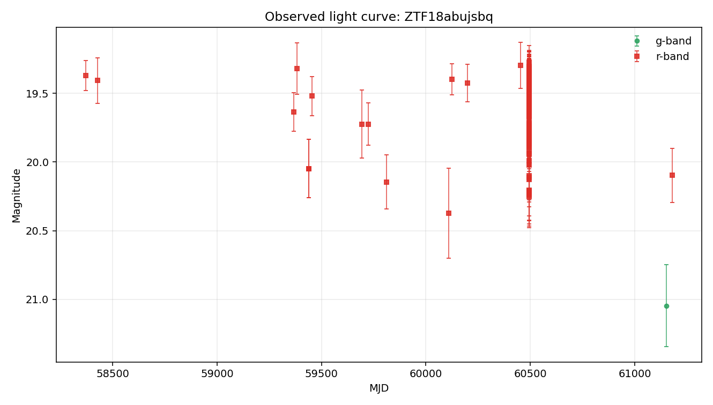

Static evidence report generated from the local case-file JSON.
Evidence Narrative
Complex light-curve behavior with limited physical interpretation
The object is not well explained by a single smooth bump. Its r-band detections show repeated or irregular variability texture, while template and catalog-context checks remain limited by available context.
Evidence Sections
Baseline transient-shape checknot_well_fit
The Gaussian bump comparator fit the detections but left substantial residual structure (reduced chi-squared about 2.4).
Variability texturecomplex_variability
The light curve shows repeated or irregular directional changes (8 smoothed turn(s)) beyond a simple smooth event shape.
Standard feature summarycomputed
Descriptive light-curve features were computed from 145 usable r-band point(s) for comparison across objects.
Template-family probelimited
Template-family probing was limited because required context such as redshift is unavailable.
Cross-survey contextnot_requested
External catalog context was not requested for this case-file run.
What Argus Can Say
The r-band detections are not well explained by a single smooth bump.
The r-band detections show repeated or irregular variability texture.
Standard descriptive features are available for comparison across objects.
No spectroscopic information is recorded in this case file.
What Argus Cannot Say
Argus does not identify the object type.
Argus does not certify that the source is unusual.
Argus does not treat broker or catalog labels as ground truth.
Argus does not treat template-family probes as object identity.
Recommended Next Checks
Inspect residual structure visually.
Compare against known repeated-variability behavior.
Add verified redshift or context before interpreting template-family probes.
Run cross-survey context if network access and optional dependencies are available.
Inspect forced photometry around recent detections if available.
Caveat: This narrative summarizes evidence layers. It is not a physical classification.
Visual Summary

Observed light curve
Object Summary
Object ID
ZTF18abujsbq
Source date
2026-05-20
Coordinates
RA=286.673, Dec=9.63316
Detections
147
Non-detections
674
Filters observed
g, r
First MJD
58340.3
Last MJD
61180.4
Time span days
2840.14
Schema version
1.8
Classification Metadata
No broker or catalog classification metadata is attached.
Any external labels shown here are metadata only, not Argus conclusions.
Light-Curve Summary
Detections
147
Non-detections
674
Filters observed
g, r
First MJD
58340.3
Last MJD
61180.4
Time span days
2840.14
Most recent detection MJD
61180.4
Longest detection gap days
938.291
Per-Filter Summary
Filter
Detections
Non-detections
Mag min
Mag max
Delta mag
g
1
130
21.0457
21.0457
0
r
146
526
19.2748
20.3721
1.0973
Feature Summary
Source
light-curve
Band
r
Status
computed
Usable points
145
Feature Values
amplitude
0.54865
inter_percentile_range_25
0.351097
maximum_slope
502.942
median
19.4947
median_absolute_deviation
0.124377
standard_deviation
0.255895
Interpretation
Descriptive light-curve features were computed for r-band detections using the light-curve package. The r-band observed brightness range is wide (1.10 mag). Standardized scatter is high for this detection set (0.26 mag). These features support comparison across objects.
Caveat
Feature values are descriptive summaries only and do not identify the object type.
Comparison Summary
Not well explained by a single smooth bump
The Gaussian bump comparator fit, but reduced chi-squared is 2.4, so the single smooth bump captures only part of the point-to-point behavior. The variability texture comparator found repeated or irregular directional changes (8 smoothed turn(s)) and the scatter is larger than typical reported errors. Together, these suggest the r-band light curve is more complex than a single clean one-bump event. Coverage appears sparse or uneven, so cadence may affect the comparison.
Caveat
This is not a physical classification. It does not identify the object type, physical cause, or special status.
Recommended next check
Inspect the residual structure and compare against known repeated-variability behavior.
Model Comparisons
Gaussian bump (r-band)
Model type
gaussian_bump
Filter used
r
Status
fitted_baseline
Parameters
amplitude_mag
0.357512
baseline_mag
19.5076
peak_mjd
59702.1
sigma_days
205.354
Fit Metrics
largest_abs_residual
0.813989
largest_residual_mjd
60108.4
mae
0.190765
n_points
146
reduced_chi2
2.35454
residual_mean
0.0715583
residual_std
0.251967
rmse
0.261932
Residual Summary
Coverage is highly uneven (largest gap 938 days vs median gap 0.00 days); fit quality is limited by sparse coverage.
Residual scatter (σ ≈ 0.25 mag) is comparable to the fitted bump amplitude (0.36 mag) — the data is not well described by a single bump.
Interpretation
A single Gaussian bump was fit to the r-band detections. RMSE = 0.26 mag, reduced χ² ≈ 2.4 — the bump shape captures the average behavior but not the point-to-point variability. See residual_summary for where the fit fails.
After 5-point smoothing, counted 8 local extrema/sign change(s).
Robust scatter is materially larger than the reported errors.
Interpretation
The r-band detections (146 point(s)) span 1.10 mag with robust scatter 0.19 mag. After 5-point smoothing, 8 local extrema/sign change(s) were counted. The scatter is materially larger than the reported photometric errors. The smoothed sequence has multiple meaningful turns, which suggests repeated or irregular brightness changes more than one smooth bump. This is descriptive only: it does not identify an object type, physical cause, or special status.
sncosmo template probe
Model type
sncosmo_template_probe
Filter used
g,r
Status
missing_required_context
Parameters
None recorded.
Fit Metrics
bands_used
["g", "r"]
magnitude_system
ab
missing_context
["redshift"]
model_family
sncosmo_template_family
n_points
147
template_name
hsiao
zeropoint
25
Residual Summary
Redshift is unavailable in the local case-file context.
Interpretation
sncosmo template fitting was not attempted because redshift is unavailable. Argus does not invent redshift for template-family comparisons.
Cross-Survey Context
Status
not_requested
Coordinates
Not available.
Search radius arcsec
Not available.
Sources
No catalog sources recorded.
Interpretation
Cross-survey catalog context was not requested for this run.
Caveat
No external catalog query was performed.
Uncertainty and Recommended Next Checks
Evidence Notes
Object has 147 rb-filtered detection(s) and 674 non-detection(s) on file.
Filters observed: g, r.
Coverage spans MJD 58340.30 to 61180.44 (2840 days).
Most recent detection: MJD 61180.44.
Longest gap between consecutive detections: 938 days.
No external classification label is attached to this object in local data.
Uncertainty Notes
No SIMBAD/NED/Gaia cross-match has been performed in Phase 2B.
No spectroscopic information is on file.
No forced-photometry follow-up has been requested.
Candidate explanations above are placeholders, not fits, so mismatch magnitudes and goodness-of-fit values are not yet available.
No external classification label is present in local data.
Recommended Next Checks
Cross-match position (RA=286.67280, Dec=9.63316) against SIMBAD and NED for any known counterpart.
Search PanSTARRS at this position for a candidate host galaxy and record offset from any nearby extended source.
Pull ZTF forced photometry in a ±90-day window around the most recent detection (MJD 61180.44).
Replace the Phase 2C Gaussian-bump baseline with physical templates (Type Ia SN light curve, AGN damped random walk, stellar-flare profile) and add their residuals to model_comparisons.
If the source is still active (last detection within ~60 days), request follow-up spectroscopy.